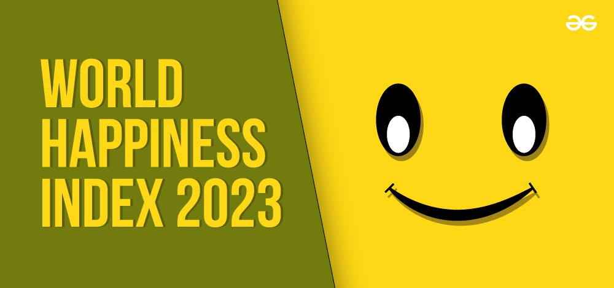
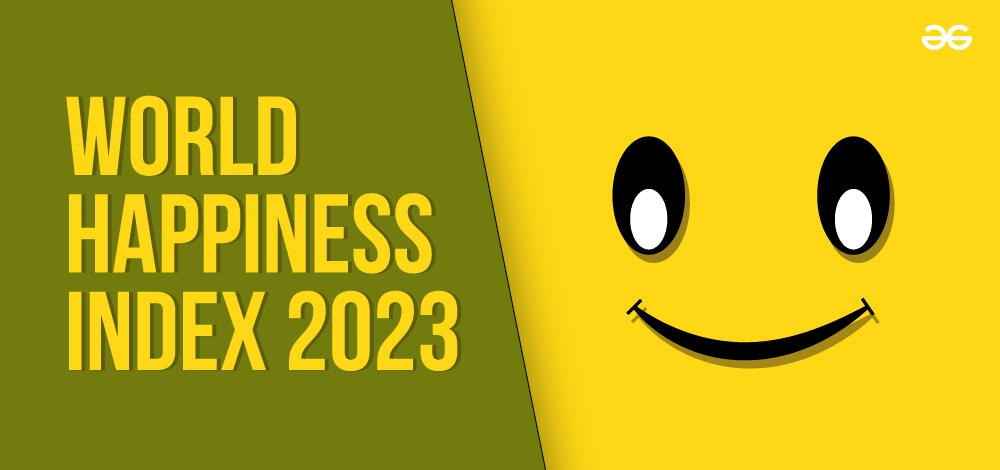

2023 Happiness Index Analysis: A Closer Look at What Shapes Global Well-being and Happiness
A Data-Driven Analysis Using Python, Exploring How Key Factors Shaped Global Happiness Rankings in 2023.
A Data-Driven Analysis Using Python, Exploring How Key Factors Shaped Global Happiness Rankings in 2023.
The Happiness Index 2023 ranks countries based on various factors contributing to the well-being and happiness of their citizens. This analysis focuses on the top 10 happiest and bottom 10 unhappiest countries, using bar charts to visualize the rankings and provide key insights into the factors influencing these outcomes.
The bar chart below illustrates the happiness scores of the top 10 happiest countries:
The bar chart below illustrates the happiness scores of the bottom 10 unhappiest countries:
To explore the relationship between economic prosperity and happiness, a scatter plot was created between GDP per capita income and the Happiness Index scores.
The analysis also examined the relationship between Perceptions of Corruption and Happiness Scores for the top 10 happiest and bottom 10 unhappiest countries.
This analysis underscores the stark contrast between the happiest and unhappiest countries in the world. While economic stability, social support, and governance drive happiness in top-ranking nations, conflict, corruption, and lack of basic needs suppress happiness in the lowest-ranking ones.
The correlation between GDP per capita and happiness, as well as the impact of corruption, further emphasizes the importance of economic development and transparent governance in improving global well-being.
Feel free to download the dataset from this GitHub repository. For additional visuals and a deeper dive into the findings, be sure to explore the full analysis in this GitHub repository.